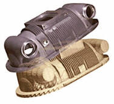

|
|
|
| Home | Previous Page
| Next Page
|
Autofabrication
Tech. > Lamination
> Bonding + Cutting:
Not: Þemadaki baþlýklarý týklayarak, direkt açýklama sayfalarýný görebilirsiniz.
Yapýþtýr + Kes tekniðinde
her tabaka, bir önce inþa edilmiþ olan katmana yapýþtýrýldýktan
sonra çeperleri lazer veya býçakla kesilir. Parçanýn inþasýnda
kullanýlmayan hammadde ise destek iþlevi görür. Bu sayede
özel bir destek yapýsýna ihtiyaç duyulmaz fakat inþa sýrasýnda
bu kýsýmlarýn küçük parçalara bölünmesi gerekir. Aksi
halde inþa sonrasýnda parçayý blok içinden çýkarmak mümkün
olmaz. Bu tekniðin uygulamalarýnda inþa malzemesi olarak
çoðunlukla kaðýt kullanýlýr:
- Helisys
Inc./ Cubic Technologies Inc. (ABD), LOM, Laminated
Object Manufacturing
- Kira
Corp. (Japonya), PLT (Paper Lamination Process),
Býçak ile her katmanýn çevresini kaser.
- KINERGY,
(Singapur), Lazer ile her katmanýn çevresini kaser
- Solidimension
(Ýsrail)
|
1985 yýlýnda Michael
Feygin tarafýndan kurulan 1991 yýlýnda ilk ticari cihazýný
üretmiþtir. Helisys firmasýnýn 2000 yýlýnda kapanmasýnýn
ardýndan, önceden satýlmýþ sistemlerin bakým ve desteði
ile malzeme tedariki Cubic Technologies Inc. tarafýndan
saðlanmaktadýr.
Solda, Feygin'in
aldýðý ilk patente ait bir resim görülmektedir. 4,752,352
numaralý ve "Apparatus and method for forming an integral
object from laminations" baþlýklý bu patentle ilgili ilk
baþvuru Haziran 1986 tarihinde yapýlmýþ, patentin alýnmasý
ise 21 Haziran 1988 tarihinde gerçekleþmiþtir.
Saðda: Ýlk patente
oranla büyük farklýlýk gösteren ve daha basit bir yapýya
kavuþan LOM, (Laminated Object Manufacturing) teknolojisinde,
yeni bir katman kaðýt gelip sýcak bir merdane ile bir
önceki katmana yapýþtýrýlýr. Yapýþma, kaðýdýn alt yüzeyinde
bulunan polimer yapýþtýrýcýnýn erimesi ile gerçekleþir.
Daha sonra kaðýt, bir
CO2 lazer
kullanýlarak çeperlerinden kesilir.
Destek olarak býrakýlan
kýsýmlarýn inþa sonrasýnda kolay çýkarýlabilmesi için
ise kalan kýsýmlar küçük karelere bölünür. Ýmalatýn hýzlý
olmasý için bazen çift kat kaðýt yapýþtýrýldýktan sonra
kesime geçilir. |
|
Helisys firmasýnýn 2030H
model sistemi.
|
| Ýnþa sonrasý destek
kýsýmlarýnýn manuel olarak çýkarýlmasý: Öncelikle
bütün sistemi bir arada tutan çerçevenin çýkarýldýðýna
dikkat ediniz.
Bazý durumlarda iç kýsýmlarda
kalan küplerin çýkarýlmasý zor da olsa zevkli bir iþ olsa
gerek? |
|
Helisys Firmasýnýn autofabrication
cihazý ile inþa edilmiþ ve küçük hacimli deneme üretimlerinde
kullanýlabilecek bir plastik enjeksiyon kalýbý. Saðda
ise bu kalýp kullanýlarak imal edilmiþ plastik parçalar
görülmekte.
|
 Helisys
LOM teknolojisi ile kaðýt ve yapýþtýrýcýdan imal edilmiþ
bir insan kemiði modeli. Seramik tozu yüklenmiþ kaðýt
kullanýlýp inþa sonrasý fýrýnda sinterlenirse direkt olarak
insan vücüdunda kullanýlacak protezler imal edilebilir.
Hatta kemiðin iç malzeme yapýsý istenildiði gibi kontrol
edilerek mukavemet ve biyolojik uyumluluk açýsýndan optimum
bir sonuca ulaþýlabilir. Helisys
LOM teknolojisi ile kaðýt ve yapýþtýrýcýdan imal edilmiþ
bir insan kemiði modeli. Seramik tozu yüklenmiþ kaðýt
kullanýlýp inþa sonrasý fýrýnda sinterlenirse direkt olarak
insan vücüdunda kullanýlacak protezler imal edilebilir.
Hatta kemiðin iç malzeme yapýsý istenildiði gibi kontrol
edilerek mukavemet ve biyolojik uyumluluk açýsýndan optimum
bir sonuca ulaþýlabilir. |
|

Helisys LOM teknolojisi
ile inþa edilmiþ modeller: Solda bir diþli kutusu gövdesi
saðda ise bir LOM modeli ve bu kullanýlarak hassas döküm
yöntemi ile elde edilmiþ metal bir parça görülmekte.
Uygulama Sahalarý >
Matematik > Helisys
|
|
CNC tezgah üretimi konusunda
geniþ bir ürün yelpazesine sahip olan Kira Corp., 1992
yýlýnda autofabrication teknolojileri konusunda çalýþmalara
baþlamýþ ve 1994 yýlýnda ise ilk ticari cihazýný üretmiþtir.
Kira SAHP (Shape Adhesive
and Hot Press)'ýn Helisys LOM teknolojisinden farklarý
þunlardýr;
- Lazer yerine bir
býçak ile kaðýdýn çeperleri kesilir
- Rulo halinde olan,
bir yüzü yapýþtýrýcýlý kaðýt yerine, A3 ebadýnda düz
kaðýt kullanýr
- Yapýþtýrýcý özelliðine
sahip bir toneri lazer yazýcý prensibi ile sadece
gerekli yerlere tatbik eder, bu sayede destek malzemesinin
ayrýþtýrýlmasý daha kolay olur.
- Yapýþtýrma için
sýcak bir rulo yerine sýcak bir press ile yüzeye basýlýr.
|
|
Saðda,
2006 yýlýnda piyasaya çýkan ve Nisan 2006'da yayýna
baþlayan yeni bir web sitesiyle (www.rapidmockup.com)
tanýtýmýna baþlanan KATANA modeli cihaz görülmektedir.
Teknik
Özellikler:
Model No: PLT-20
Ýnþa malzemesi: 0,1 veya 0,16m kalýnlýðýnda özel kaðýt
Ýnþa zarfý (Y eksen min.): 180×80×150 mm
Ýnþa zarfý (Y eksen max.): 180×280×150 mm
Çözünürlük: 0,025mm (X,Y), 0,10mm (Z) veya 0,16mm (Z)
Hassasiyet: ±0,5mm (X,Y), ±%3 (Z)
|
 Solda ve altta, bu teknikle
üretilmiþ bazý modeller görülmektedir. Saðda: Kira/
SAHP teknolojisi ile inþa edilmiþ kalýp, sert bir ahþap
mukavemetine sahiptir ve kýsa ömürlü plastik enjeksiyon
kalýbý olarak kullanýlabilir.
Solda ve altta, bu teknikle
üretilmiþ bazý modeller görülmektedir. Saðda: Kira/
SAHP teknolojisi ile inþa edilmiþ kalýp, sert bir ahþap
mukavemetine sahiptir ve kýsa ömürlü plastik enjeksiyon
kalýbý olarak kullanýlabilir. |
|
|
Yukarýda: Bazýlarý
sonradan boyanmýþ dinazor ve yunus modelleri.
|
|
1994 yýlýnda kurulan
Kinergy, Mart 1995 yýlýnda ilk ticari ürününü piyasaya
sürmüþtür. Bu firma 2001 yýlý itibarý ile autofabrication cihazlarý
üretimini durdurmuþ ve diðer sahalarda faaliyet göstermeye
devam etmiþtir.
Kinergy'nin ZIPPY ve
SW serisi autofabrication cihazlarý bulunmaktaydý. Helisys
LOM teknolojisi ile ile çok benzerlik gösteren bu cihazlardan
ZIPPY I modelinde 50W gücünde CO2
lazerinden yöneltilen ýsý enerjisi ile her tabakanýn
çevresi kesilir. ZIPPY serisinde ZIPPY I, ZIPPY II ve
ZIPPY III modelleri mevcuttur. Helisys ile olan patent
çakýþmasý sebebiyle Kinergy orta asya ve uzakdoðu pazarýný
hedeflemiþtir. Fakat 1997 itibarý ile Avrupa'ya da birkaç
ZIPPY satýþý yapýlmýþtýr. Kinergy'nin cihazlarý Çin,
Tayvan, Almanya, Endonezya ve Singapur'da kullanýlmaktadýr:
ZIPPY sistemlerindeki
ýsýtma sistemi ve kaðýt türü Helisys'den farklýdýr:
Kaðýt üzerinde yüksek sýcaklýkta eriyen bir yapýþtýrýcý
kullanýlmakdadýr. Bu sayede inþa edilen ürün daha yüksek
mukavemete sahip olur. ZIPPY II 1200 mm x 800 mm ebadýnda
bir inþa alanýna sahiptir. SW
serisi cihazlar ise plastik tabakalarla inþa kabiliyetine
sahitir. Ýnþa sýrasýnda farklý renkte ve cinste plastik
malzeme kullanýlabilir.
Aþaðýda bu cihazlarla inþa edilmiþ bazý parçalar görülmektedir.
En saðdaki ise prototip kalýp amaçlý olarak inþa edilmiþtir:
Not: Kinergy, Singapur Ulusal Üniv. ile yaptýðý
bir iþbirliði ile metal tozlarýyla lazer sinterleme
(Toz
Baðlama > Isýtarak)
prensibine göre çalýþan yeni bir cihaz üzerinde de çalýþmaktadýr.
Yüksek ergime sýcaklýklarýna sahip metal tozlarýný eritme
kabiliyetine sahip olacak bu cihaz yüksek güçlü lazer
kaynaðý kullanmaktadýr ve inþa sonrasýnda ek bir sinterleme
veya bakýr emdirme iþlemine gerek duymamaktadýr.
|
|
Bu
firma 2000 yýlýnda kurulmuþtur. 2001 itibarý ile web
sitelerinden SD100c ve SD300c modellerini duyuran firma
2002'de çalýþmalarýný bir süre durdurmuþ gözükmekteydi.
2001 yýlýnýn ortasýnda ikinci modellerini piyasaya sürme
planlarý gerçekleþmemiþtir.
Solidimension sistemlerini Japonya tabanlý Graphtec
Corporation ile iþbirliði yaparak geliþtirmiþtir.
Graphtec Corporation daha çok reklamcýlýkta kullanýlan
PVC kesici plotter sistemleri üretmektedir...
Temmuz
2003 tarihinde web sitelerinde SD300 modelinin
özelliklerine dair daha fazla bilgi bulunmaktadýr: Bu
sistemde rulo halinde yüklenen plastik malzeme özel
bir kimyasal malzeme tatbikiyle yüzeye yapýþtýrýlýr
ve ardýndan çevresi býçakla kesilir. Yapýþmamasý gereken
detsek malzemesi yüzeylerine ise yapýþtýrýcýnýn etkisini
durduran bir kimyasal "antiglue" püskürtülür.
Ýnþa
sonrasýnda destek yapýsý saðdaki resimde görüldüðü gibi
"portakal kabuðu gibi" soyulur. Bu resim Solidimension'a
ait 6,602,377 B1 no'lu ABD patentinden alýnmýþtýr. Resmi
daha büyük görmek için üzerini klikleyiniz.
Almanya'da
Euromold 2003 Fuarý'nda ilk kez çalýþýr vaziyette bir
SD 300 modeli sergilenmiþtir.
Ýnþa zarfý: 170 x 220 x 145 mm (XYZ)
Katman kalýnlýðý: 0.165mm
Malzeme: PVC (polyvinyl chloride, þeffaf)
Hassasiyet: +/- 0.2 mm (XY)
3D Systems, 9 Mayýs 2005 tarihinde Solidimension'a
ait bu sistemleri InVisionT LD 3-D Printer markasý
altýnda pazarlamaya baþladýðýný açýklamýþtýr;
www.3dsystems.com/products/multijet/invisionLD/index.asp
|
| Home | Previous Page
| Next Page
| |
|